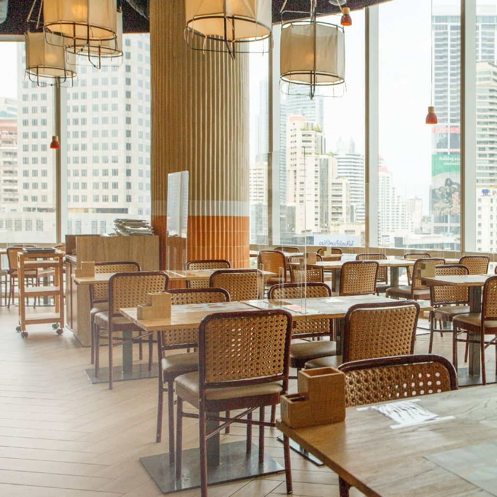
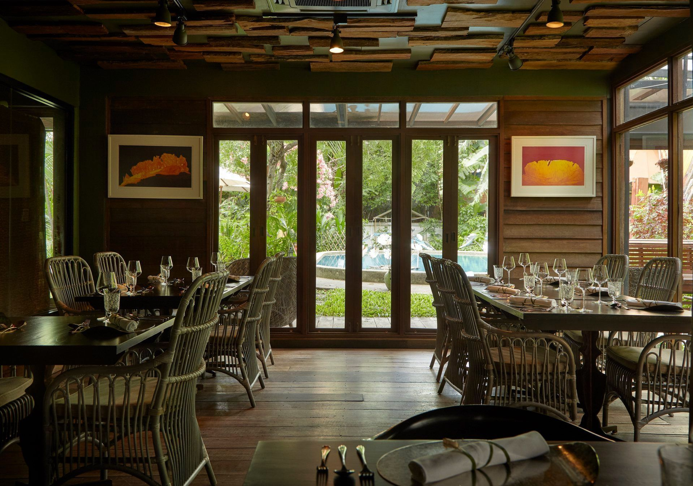

3 Best Thai Foods Restaurants
1. Savoey
Savoey is a Thai restaurant in Bangkok offering a longstanding Thai seafood dining experience, tracing its roots back to 1972. Renowned for its commitment to authenticity, Savoey prides itself on traditional recipes passed down through generations.
The menu boasts a variety of standout seafood dishes such as Deep-Fried Seabass in Fish Sauce with Mango Salsa, Stir-Fried Jumbo Crab-meat in Yellow Curry Sauce, Steamed Squid in Spicy Lime Sauce, and Grilled Giant River Prawns. With four branches across Bangkok, including locations at The Mercury Ville @ Chidlom, Terminal 21 Asok and Tha Maharaj
2. Bo.lan
Bo.lan, a distinguished MICHELIN star restaurant in Bangkok, offers an exquisite Chef's Tasting menu curated by Chef Duangporn Songvisava and Chef Dylan Jones. Named after the chefs themselves—Bo from Chef Duangporn’s nickname and Lan from Dylan—the restaurant emphasizes seasonal ingredients and the often-overlooked aromatic aspects of Thai cuisine.
Each dish on the rotating menu showcases meticulous preparation and a deep respect for Thai culinary traditions. Bo.lan's commitment to sustainability is evident through its support of local communities and artisans. Located at Sukhumvit 53 and open Thursday to Sunday from 6 pm onwards
3. Supanniga Eating Room
Supanniga Eating Room, with branches in Thonglor, Sathorn 10, and Thai Tien, brings a homelike dining experience to Bangkok. Emphasizing authentic Thai flavors and recipes passed down through generations, the restaurant blends dishes from owner Khun Yai's hometowns of Trad and Chantaburi, and a savory Isaan twist.
Menu highlights like Stir-fried Crab Meat with Yellow Bell Peppers and Yellow Chili Paste, and Grilled River Prawns with Thai Sweet and Spicy Curry showcase their commitment to quality and tradition. This Bangkok's Thai restaurant for everyday people excels in preserving and presenting traditional flavors and is open daily from 11 am to 10 pm.